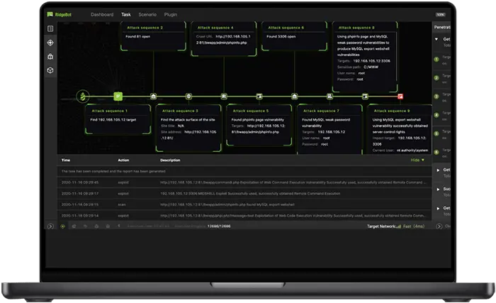
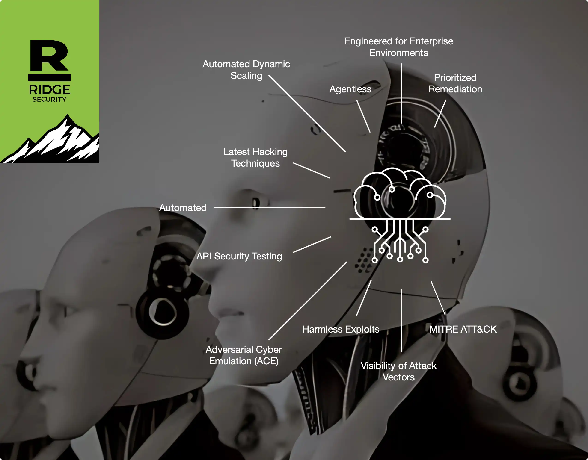

请访问原文链接：RidgeBot 5.4.5 - 基于 AI 的主动安全验证平台 查看最新版。原创作品，转载请保留出处。
作者主页：sysin.org
RidgeBot®
基于 AI 的主动安全验证平台

全方位 360° 企业安全验证
RidgeBot® 的主动安全平台采用 AI 驱动的技术，能够自动扫描、验证并安全利用 IT 环境中的漏洞，为安全团队提供确凿的安全缺口证据。RidgeBot® 提供丰富的风险分析和优先级排序，并生成包含修复建议的完整报告。

✅ 自动化渗透测试
- 无代理黑盒测试，支持内部攻击、外部攻击及横向渗透。
- 检测并利用漏洞，并提供验证证据。
- 攻击链与实时攻击行为可视化。
✅ 模拟对手攻击（Adversary Emulation）
- 测量安全控制的实际有效性。
- 基于代理的入侵与攻击模拟，符合 MITRE ATT&CK 框架。
- 支持三种场景：终端安全、数据外泄、Active Directory 信息侦察。
✅ API 安全测试
- 针对 OWASP API 安全 Top 10 风险进行测试。
- 检测隐藏路径、水平和垂直权限提升。
- 分析认证与授权机制的安全性。
✅ 网站安全测试
- 符合 OWASP Top 10 的测试和报告。
- 识别并验证关键风险 (sysin)，如 SQL 注入、SSRF、点击劫持、操作系统命令注入、不安全反序列化等。
- 支持已认证网站和单页应用（SPA）。
✅ 勒索软件防护测试
- 针对勒索软件组织使用的最新攻击手法进行测试。
- 评估企业抵御勒索攻击的能力。
- 提供修复建议和应对方案。
✅ 漏洞验证
- 验证特定环境下漏洞是否可被利用。
- 基于验证结果对漏洞进行优先级排序。
- 通过 API 与主流第三方漏洞扫描器无缝集成。
RidgeBot 优势
RidgeBot® 的主动安全平台提供 持续风险验证，这是其与现有产品和服务的显著区别。
| 对比项 | RidgeBot® | 多数竞争对手（传统流程） |
|---|---|---|
| 风险验证① | 基于 AI 的全自动渗透测试，能够检测并验证漏洞、弱点与配置错误，为安全团队提供修复依据，无需高技能人员即可执行。 | 手动流程结合多种工具查找可能的攻击目标，需要经验丰富的测试人员，耗时长。 |
| 持续测试 | RidgeBot® 是不知疲倦的软件机器人，可按月、按周甚至每日执行安全验证任务，并提供历史趋势报告，让客户持续放心。 | 过慢且成本高昂，通常无法在一个季度以上的频率重复执行。 |
| 安全态势评估 | 通过符合 MITRE ATT&CK 框架的模拟测试评估安全策略的实际有效性。 | 蓝队尽力确保安全设备配置正确，但缺乏验证测试。 |
| 漏洞管理 | 对已在组织环境中被利用的漏洞进行优先级排序 (sysin)，并提供确凿证据，零误报。 | 列出所有可能漏洞但不验证，导致高误报率。 |
| API 测试 | 基于 Swagger 文件执行 API 渗透测试，检测并验证漏洞，包括 OWASP API Top 10 风险、隐藏路径等，防止水平权限提升。 | 大多数自动化渗透测试工具不支持 API 测试，组织需另购其他厂商产品。 |
① 每一个 RidgeBot® 验证的风险都意味着该漏洞在客户的特定网络与服务器配置中可被黑客利用。RidgeBot 使用真实的 POC（概念验证）代码验证漏洞，客户安全工程师需立即修复风险。
适用的 VMware 软件下载
建议在以下版本的 VMware 软件中运行（Linux OVF 无需本站定制版可以正常运行，macOS 虚拟化如果不是 Mac 必须使用定制版才能运行，Windows OVF 需要定制版才能启用完整功能）：
- VMware vSphere：
- VMware ESXi 9 or with driver & vCenter Server 9 & VCF Operations 9
- VMware ESXi 8 or with driver & vCenter Server 8
- VMware ESXi 7 or with driver & vCenter Server 7
- macOS：VMware Fusion
- Linux：VMware Workstation for Linux
- Windows：VMware Workstation for Windows
下载地址
RidgeBot v4.1.0-20220914 OVA for WMware
- 百度网盘链接：https://pan.baidu.com/s/13XNZZz3XRw0s3AMSo7kvhQ?pwd=?<专享>
- 通过捐赠下载此版本：点击 💙支付宝 或者 💚 微信支付，扫码备注邮箱（用于识别注册用户，忘记备注请提供时间），
评论区留言指定版本（默认当前最新版），在其他平台留言恕无法处理。 - 提示：捐赠或赞赏属于自愿赠予行为，提交后即表示您对作者的支持与认可。为避免误操作，请在确认前仔细检查金额，支付完成后将无法撤销或退还。
RidgeBot v4.2.6-20231207 iso
百度网盘链接：[EoD]
RidgeBot v5.4.5-20250707 OVA for WMware
- 百度网盘链接：https://pan.baidu.com/s/13XNZZz3XRw0s3AMSo7kvhQ?pwd= <专享>
- 文件大小：约 28GB
- 系统要求：ESXi 6.7+, Fusion 10+, Workstation 14+
更多：HTTP 协议与安全

文章用于推荐和分享优秀的软件产品及其相关技术，所有软件默认提供官方原版（免费版或试用版），免费分享。对于部分产品笔者加入了自己的理解和分析，方便学习和研究使用。任何内容若侵犯了您的版权，请联系作者删除。如果您喜欢这篇文章或者觉得它对您有所帮助，或者发现有不当之处，欢迎您发表评论，也欢迎您分享这个网站，或者赞赏一下作者，谢谢！
 支付宝赞赏
支付宝赞赏  微信赞赏
微信赞赏赞赏一下
敬请注册！点击 “登录” - “用户注册”（已知不支持 21.cn/189.cn 邮箱）。 请勿使用联合登录（已关闭）。